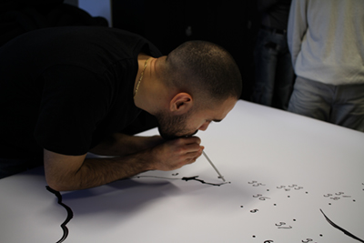

This month’s reading:
“Bite, Chew, Eat” from “Lexicon of the Mouth” by Brandon LaBelle.
Additional texts in the reader: “Yurokon” by Wilson Harris, “Liner Notes on Lick Piece” by Fred Moten, “Columbus and the Cannibals” by Peter Hulme, “Mother Tongue” by Amy Tan, “Dreaming in Foreign” by Safiya Sinclair, “A Tempest” by Aimé Césaire, “All You Can’t Eat: Derrida’s Course “Rhétorique Du Cannibalisme” (1990–1991)” by David Farrell Krell.
This month, we followed the Sonic Meditation “Tumbling Song” until the sound of the sirens went off.
Sonic Meditation meetings are inspired by Pauline Oliveros, who introduced them as non-verbal group work, as a way of attuning yourself to others, through one's own voice as well as exercising to listen to each other without the pressure of daily speech, often being marked by gendered parameters.
TUMBLING SONG
MAKE ANY VOCAL SOUND, BUT ALWAYS GO DOWNWARD IN PITCH FROM THE INITIAL ATTACK. THE INITIAL ATTACK MAY BEGIN AT ANY PITCH LEVEL. GO DOWNWARD IN A GLISSANDO OR IN DISCRETE STEPS CONTINUOUSLY. GO ANY DISTANCE IN RANGE, AT ANY SPEED, DYNAMIC OR QUALITY, BUT THE BREATH DETERMINES THE MAXIMUM TIME LENGTH OF ANY DOWNWARD GESTURE.
Straw Phonation and Collective Gargle, exercises led by the WTFPC, followed by a Silent Lunch. This month’s WTFPC supper, along with other WTFPC activities, can be tracked here.
“My mother’s tongue” is a game, in which dots are connected by different mouths, breath, and saliva.
It is a response to Brandon LaBelle’s “Lexicon of the Mouth — Bite, Chew, Eat”, acknowledging a violence which remains disturbingly clear today; how the history of how we bite, chew, and eat (another), is a primal habit.
Words associated with the mouth and its abilities become infinite—though social boundaries restrain the mouth and create strict distinctions or: definitions of what is “law and taboo”. “My mother’s tongue” is an interactive performance,1 in which a lexicon is read. A lexicon which partly draws from LaBelle’s politics of the mouth, exploring its contemporary relevance, merged with definitions that arose from my own voice. This created both a messy2 trajectory to be chewed, and a bodily connection through the sounds of mouths blowing ink.3
(Credits for the title go to “Mother Tongue” by Amy Tan, a text which strongly informed my own politics of the mouth, developed during this project).
- performance
- messy traces.
- ink on paper